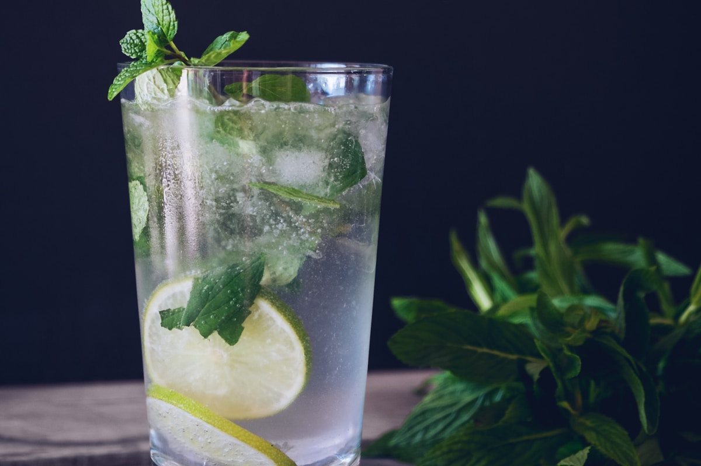

For generations, the art of beverage pairing at the evening dinner table was restricted to fermented spirits. However, a culinary renaissance is unfolding across the gastronomic world: sophisticated zero-proof evening pairings crafted from cold-macerated fruit shrubs, sparkling heirloom orchard ciders, smoked botanical teas, and herbal oxymels. In this comprehensive monograph, we explore flavor architecture, palate-cleansing chemistry, and how to create extraordinary craft botanical pairings for rich evening feasts.
1. The Philosophy of Mindful Evening Dining
Evening dining should leave you feeling restored, clear-headed, and gently nourished. By exploring botanical gastronomy, home cooks and hosts can elevate their dinner tables with complex, nuanced beverages that match the depth and sophistication of a four-hour braised roast or handmade pasta feast, ensuring total clarity, restorative digestion, and restful slumber.
Botanical pairings leverage the vast diversity of wild plants, heirloom orchard fruits, mountain herbs, and steeped spices to stimulate the same gustatory receptors—acidity, sweetness, bitterness, umami, and astringency—that fine dining sommeliers seek in traditional pairings.
2. Flavor Architecture: Acidity, Tannins, and Effervescence
To successfully complement a rich dinner dish, a craft beverage must fulfill three specific sensory functions on the palate:
- Palate-Cleansing Acidity: Rich dishes—such as braised beef chuck, butter-tossed pasta, or creamy butternut bisque—leave a coating of lipids on the tongue that gradually dulls flavor receptors. Natural organic acids (malic acid from apples, citric acid from lemons, and acetic acid from raw fruit vinegars) cut through richness, refreshing taste buds between bites.
- Structural Tannins: Tannins from cold-steeped wood teas, dried elderberries, and grape skins provide astringency and structure, binding to salivary proteins and creating a pleasing dry finish that complements savory umami.
- Fine-Bubble Effervescence: Natural sparkling carbonation provides tactile lift, scrubbing the palate with tiny bubbles and releasing volatile aromatic compounds into the retro-nasal passage.
- Bitter Balance: Gentle bitter gentian root and orange peel tonics stimulate bile production and prepare gastric enzymes for smooth, effortless digestion of rich evening proteins and fats.

3. The Four Pillar Repertoires of Botanical Dinner Pairings
At CozyMealCove, our evening dining pairings draw from four distinct craft beverage categories:
A. Sparkling Heritage Orchard Ciders
Pressed from traditional heirloom cider apple varieties (such as Kingston Black, Dabinett, and Roxbury Russet). These heirloom apples contain high concentrations of natural malic acid and bitter-sharp tannins that mimic the complexity of fine sparkling beverages. Carbonated with tiny champagne-style bubbles, sparkling heritage cider is the ultimate pairing for cast-iron seared poultry, roasted pork loin, and creamy squash bisques.
B. Cold-Macerated Botanical Shrubs & Oxymels
Shrubs are colonial-era fruit and herb preserves crafted by macerating seasonal berries (blackberries, sour cherries, cranberries) with raw organic cane sugar, unpasteurized apple cider vinegar, and fresh mountain herbs (rosemary, sage, thyme). When topped with sparkling mineral water, a blackberry-sage shrub delivers tart, refreshing fruit acidity that harmonizes beautifully with rich Dutch oven pot roasts and wild savory stews.
C. Smoked & Wood-Aged Mountain Teas
Whole-leaf black teas smoked over pine embers (such as Lapsang Souchong) or aged in charred oak barrels provide deep, woodsy tannin structures, campfire aromatics, and rich maltiness. Served chilled in stemware, smoked tea infusions provide an extraordinary pairing for braised mushrooms, caramelized root vegetables, and grilled hearth flatbreads.
D. Floral & Bitter Botanical Tonics
Infusions of wild gentian root, juniper berries, dried orange peel, and elderflower create complex bitter-sweet profiles that stimulate digestive enzymes before and during multi-course dinner seatings.
4. Seasonal Dinner Pairing Menu Matrix
| Dinner Course | Botanical Pairing Creation | Sensory Pairing Harmony |
|---|---|---|
| Roasted Butternut Squash Bisque | Sparkling Spiced Orchard Apple Press | Crisp malic acidity cuts through cultured cream; nutmeg echoes baking spice |
| Tagliatelle with 6-Hour Beef Ragù | Cold-Steeped Smoked Pine Black Tea | Woodsy tannins cut through meat gelatin; deep roasted notes match caramelized fond |
| Cast-Iron Roasted Chicken & Leeks | Blackberry & Thyme Sparkling Shrub | Herbal thyme synergy; tart blackberry acid balances crispy chicken skin fat |
| Hearth-Baked Honey Apple Crisp | Warm Chamomile, Ginger & Pear Cordial | Floral soothing honey notes; gentle ginger warmth complements buttery oat streusel |
5. Glassware and Tableside Presentation Rituals
The pleasure of a beverage is deeply influenced by glassware aesthetics. At CozyMealCove, our botanical ciders and herb shrubs are never served in casual tumblers; they are poured tableside into chilled, thin-rimmed crystal glassware with fresh sprigs of slapped garden rosemary or dehydrated citrus wheels.
Presenting craft pairings with intentional elegance honors the dining guest, elevates the communal atmosphere, and ensures that every member of the dinner table experiences the full theatrical joy of artisanal gastronomy.
7. Wildcrafting Botanicals & Appalachian Herb Foraging
In the Blue Ridge mountains surrounding our Asheville test kitchen, wild forests provide a rich cornucopia of aromatic botanicals that elevate evening dinner pairings:
- Wild Staghorn Sumac: The fuzzy red drupes of wild sumac contain high concentrations of natural malic and citric acids. Cold-steeped in spring water, sumac produces a vibrant, ruby-red botanical infusion with bright, tart cranberry notes that beautifully cuts through the richness of roasted duck or pork belly.
- Spruce & Pine Tips: Tender young spring needles from Eastern hemlock and Fraser fir release citrusy, piney terpenes and vitamin C, creating an invigorating resinous cordial when macerated in raw wildflower honey.
- Wild Mountain Blackberries: Plump forest bramble berries macerated with fresh garden sage and unpasteurized apple cider vinegar create our signature dark evening dinner shrub.
- Elderberries & Wild Cherries: Simmered gently with cinnamon sticks and allspice berries into dark, tannin-rich dinner cordials served warm in cold winter months.
8. Cold-Steep Extraction Kinetics vs Rapid Boiling
When extracting delicate botanical flavors, temperature kinetics play a crucial role. High-temperature boiling can scald delicate volatile aromatic compounds and extract harsh, bitter polyphenols.
For delicate botanicals (like chamomile, elderflower, and fresh mint), we utilize cold-maceration or room-temperature steeping over 24 to 48 hours. Cold extraction gently draws out sweet fruit esters and essential oils while leaving bitter, harsh tannins behind, resulting in smooth, rounded craft beverages with crystalline clarity.
9. Carbonation PSI & Crystal Stemware Service
The sensory impact of sparkling ciders and tonics depends on carbonation dynamics. We recommend gentle carbonation (between 2.2 and 2.6 volumes of CO2) that produces fine, champagne-like micro-bubbles rather than harsh, bloated effervescence.
Serve craft botanical pairings in thin-rimmed, tulip-shaped crystal stemware at 48°F to 52°F (9°C to 11°C). The tapered glass bowl concentrates subtle floral aromatics toward the nose while keeping the liquid chilled without needing excessive melting ice.
10. Fermentation Dynamics in Wild Ginger Bugs & Water Kefir
In addition to vinegar-based fruit shrubs, natural probiotic fermentation offers an extraordinary spectrum of complex acidity and delicate carbonation for evening dinner pairings. A wild ginger bug—cultured by fermenting organic ginger root, unrefined cane sugar, and mountain spring water for five days—captures wild airborne yeasts and beneficial lactic acid bacteria.
When combined with fresh-pressed heritage apple cider or dark cherry purée and fermented in airtight swing-top bottles for 48 hours, the wild culture creates a dry, naturally effervescent cordial with spicy ginger warmth and refreshing fruit acidity that harmonizes flawlessly with rich braised meats and savory evening pasta courses.
6. Step-by-Step Shrub Maceration Masterclass
To craft your own seasonal botanical shrub at home:
- Step 1: Cold Maceration: Combine 500g of fresh or frozen blackberries with 400g of raw organic cane sugar and 4 bruised sprigs of garden rosemary in a glass mason jar. Shake well and refrigerate for 48 hours, shaking twice daily until the sugar dissolves completely into a rich fruit syrup.
- Step 2: Strain & Infuse Acid: Strain the fruit syrup through fine mesh, pressing lightly to extract juices without clouding the liquid. Stir in 350ml of raw, unpasteurized apple cider vinegar.
- Step 3: Age & Harmonize: Bottle the shrub and age in the refrigerator for 7 days. Over time, the harsh vinegar edge mellows into a smooth, rounded, tart-sweet cordial.
- Step 4: Serve Tableside: Add 1.5 oz of aged shrub over clear ice in crystal stemware, top with 5 oz of chilled sparkling spring water, and garnish with a slapped rosemary sprig.